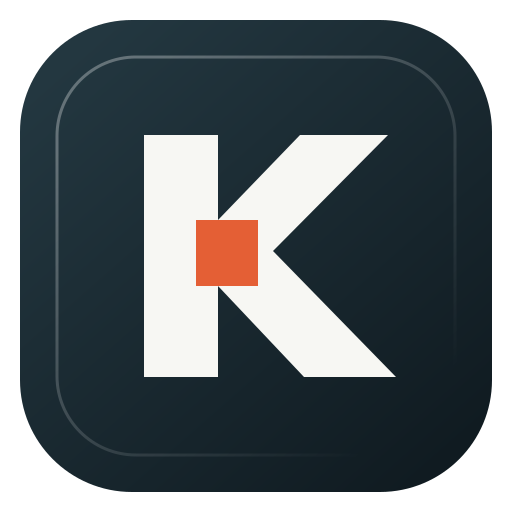
Kerfloom
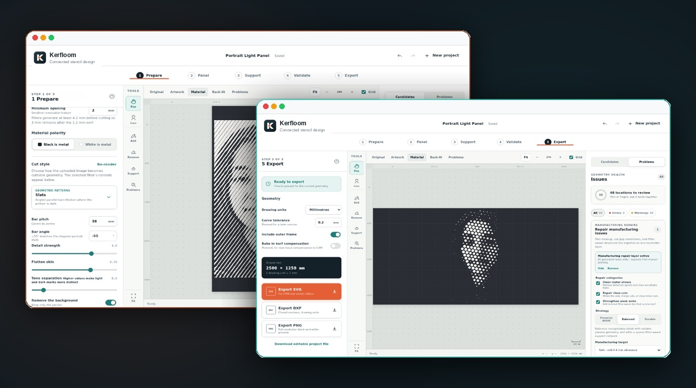
About The Project
Art that holds together.
Kerfloom turns photographs and prepared artwork into connected, manufacturing-aware geometry for CNC plasma, laser, and waterjet cutting. It combines creative graphic image treatments with panel sizing, automated structural support design, physical kerf validation, manual touch-ups, in-browser project management, encrypted sharing, and CAM-ready exports into a unified, installable Progressive Web App.
The foundational law of CNC stencils is simple: dark geometry represents retained metal, and light geometry represents material to remove. In plasma and laser cutting, disconnected islands fall through the cutting table, and delicate bridges burn away. Kerfloom keeps the source treatment, structural frame, support bridges, manual brush edits, and automated manufacturing repairs as separate non-destructive inputs so the final panel can be consistently rebuilt, validated, and exported without altering original artwork.
The 5-Step Workflow
- 1️⃣ Prepare: Import photographs or vector artwork, select from 13 cut styles (including Slats, Hatch, Variable Dots, Contour Bands, Stencil Portraits, and Radial Cuts with progressive ray splitting), and adjust bar pitch, angles, detail strength, and background isolation.
- 2️⃣ Panel: Configure sheet metal stock dimensions (default 1250 × 2500 mm), portrait or landscape orientation, perimeter frame widths, anchor edges, and plasma constraints (default 2 mm minimum opening and 3 mm finished gap/web).
- 3️⃣ Support: Automatically inspect topological connectivity, identify floating islands that would fall out, and generate smart, filter-aligned bridges or organic slat stabilizers with portrait-aware dark-feature placement to protect facial expressions from interruption.
- 4️⃣ Validate: Simulate real cutting kerf (e.g. 1.2 mm torch width). Locate unsevered dropouts, tight cuts, and fragile webs. Preview reversible manufacturing repair layers before making changes.
- 5️⃣ Export: Download verified closed-contour DXF files calibrated for CAM software, clean SVG vector files, full-resolution preview PNGs, or portable Kerfloom project files with descriptive timestamped filenames (e.g.,
project_297x420mm_slats_frame_cut_2026-09-15-162005.dxf).
Features
- 🎨 13 Parametric Cut Styles: Line art, Poster stencil, Icon stencil, Graphic portrait, Silhouette, Negative-space linework, Icon / Woodcut, Contour bands, Slats, Hatch, Radial cuts (with directly controlled solid-hub diameter and progressive ray splitting), Variable dots, and Ornamental symmetry.
- 🌉 Portrait-Aware Smart Bridges: Automatically generates structural ties aligned with active filter directions, with portrait-aware dark-feature placement and sparse slat stabilizers to protect facial features from interruption.
- 🔥 Kerf Simulation & Physical Validation: Previews post-kerf physical geometry to guarantee that finished features preserve minimum web strength, checking disconnected material, minimum openings, and close cuts.
- 🛠️ Automated Reversible Repairs: Cleans isolated raster slivers, widens close cuts, and strengthens weak webs with a single click without permanently altering the underlying artistic filters.
- ✏️ Interactive Editing Brushes: Real-time manual Add/Remove metal tools, straight lines, connected-region fill, and single-gesture undo for artisan precision.
- 🗃️ In-Browser Project Library & Recoverable Trash: Browse panels with rendered geometry thumbnails, cut style, validation status, and source image availability. Full project lifecycle with rename, duplicate, download, and recoverable Trash.
- ⏱️ Autosave & 10 Recovery Rollback Points: Real-time status reporting,
Ctrl/Cmd+Simmediate saving, pending edit flushes, and up to ten automatic recovery rollback points retained after validation, repair, support generation, and export. - 🔐 Encrypted Private Project Sharing: Generate server-hosted encrypted snapshot packages protected by random link secrets and expiring in 7, 30, or 90 days. Recipients import an independent local editable copy without ongoing cloud sync or cross-device overwrite risks.
- 📦 Retained Export Artefacts: In-browser artifact store keeping up to 30 recent SVG, DXF, and PNG exports directly associated with each project, using standardized descriptive names like
project_297x420mm_slats_frame_cut_YYYY-MM-DD.dxf. - 📱 Installable Offline PWA: Runs as an installable, offline-capable Progressive Web App once authorized on a device.
Architecture & Tech Stack
Client PWA & Geometry Core
Vanilla JavaScript (ES Modules), deterministic client-side 2D topology and mask processing engine, responsive HTML5 canvas preview, and IndexedDB storage for projects, checkpoints, and export artefacts.
Analysis Microservice
Isolated Python 3 / FastAPI service utilizing OpenCV and MediaPipe for advanced portrait analysis, depth filtering, and photographic cut pattern synthesis.
Security Gateway & Sharing
Node.js / Express security gateway handling invite-token authentication, encrypted expiring project share packages, rootless Podman Quadlet containers on private networks, and Caddy reverse proxy.
Parametric Cut Styles Gallery
Real manufacturing geometry generated by Kerfloom across different parametric treatments — complete with border frame margins, physical web bridges, and kerf compensation:
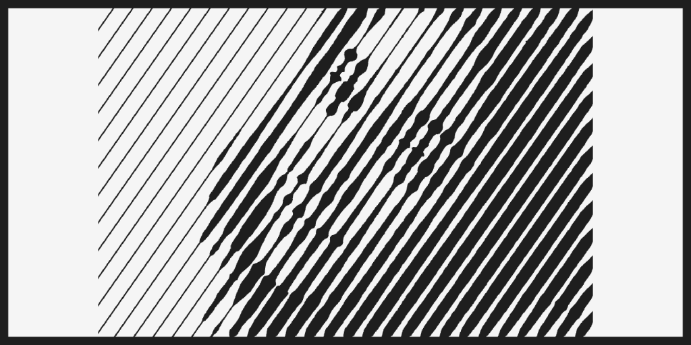
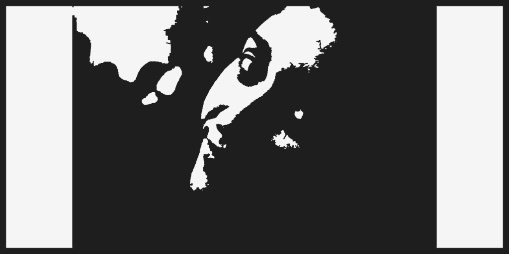
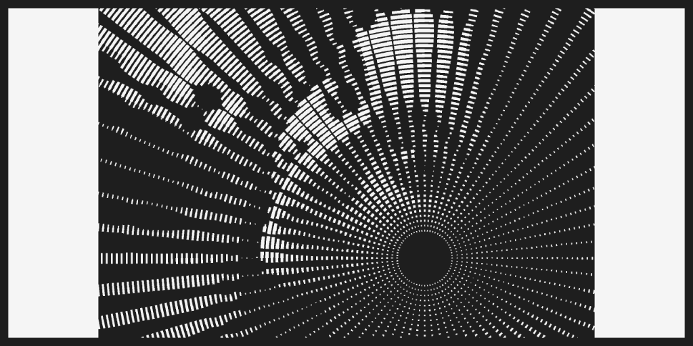
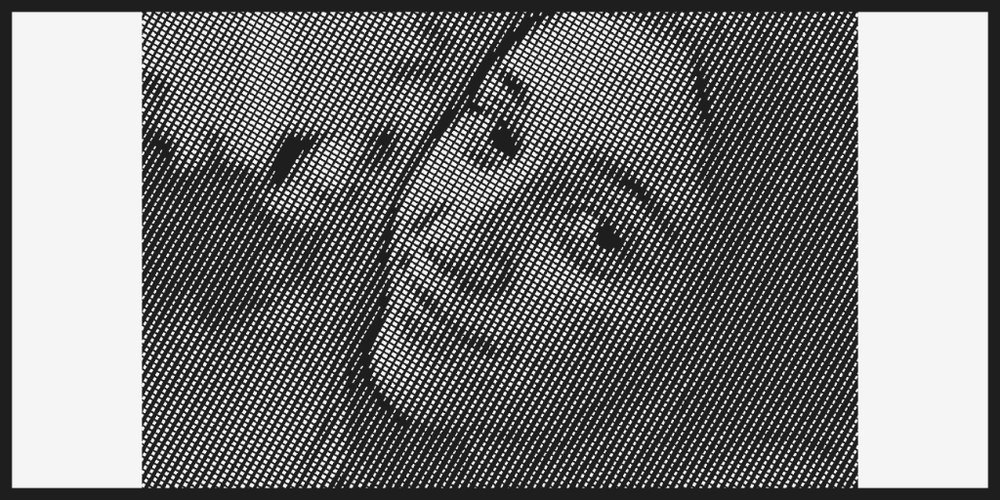
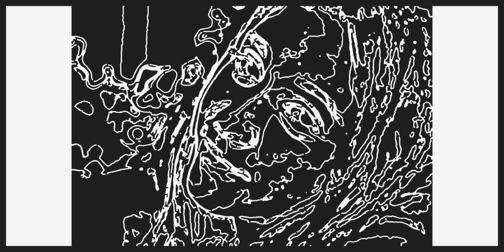
Application Workflow Gallery
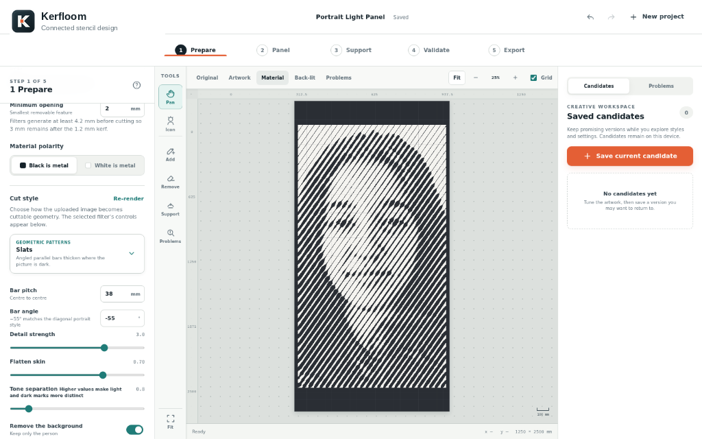
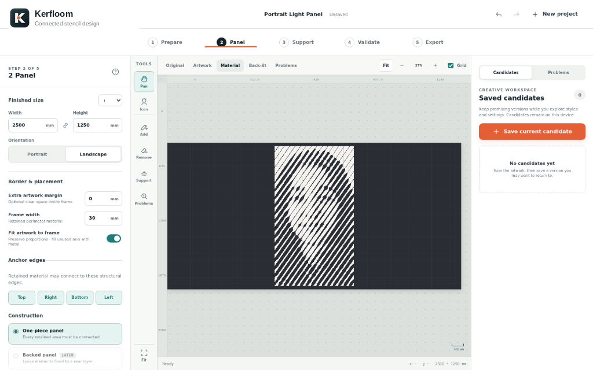
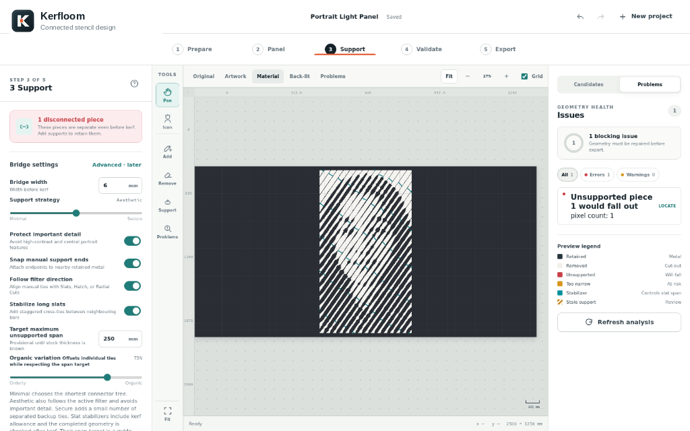
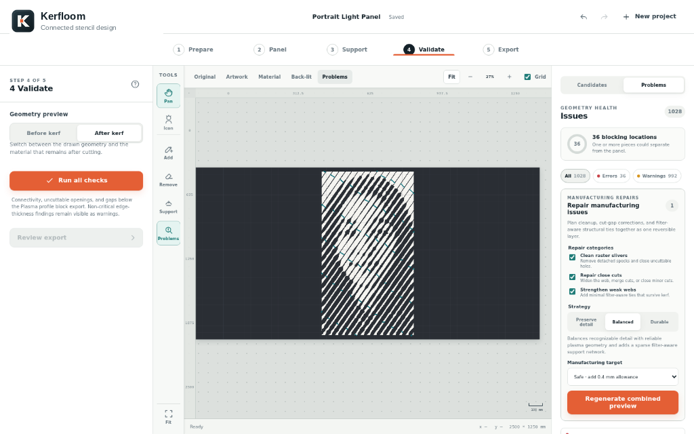
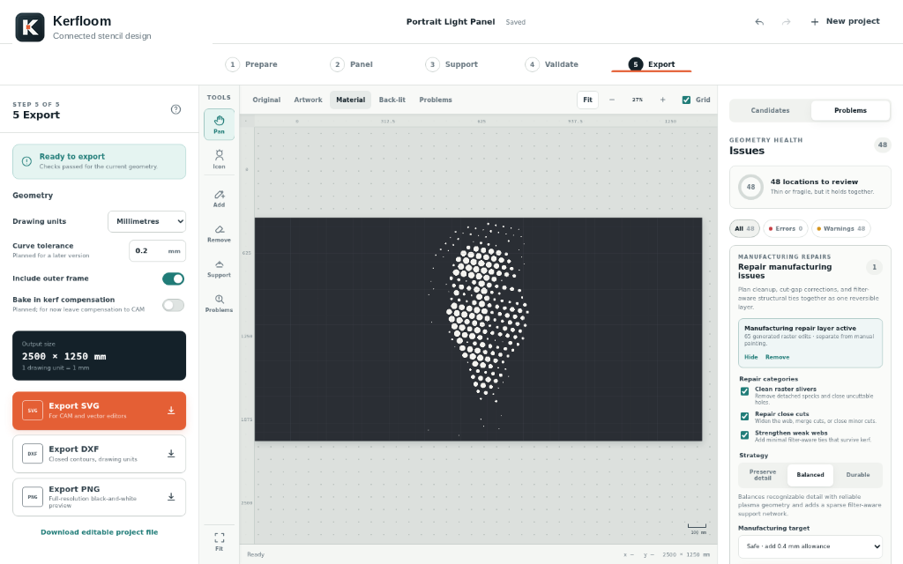